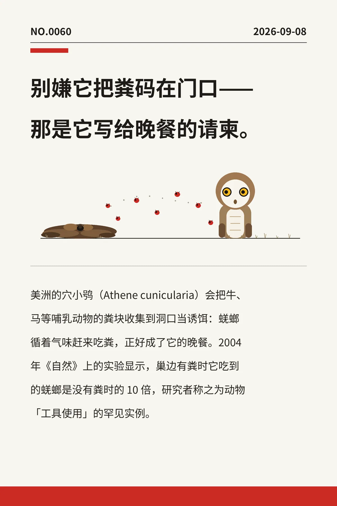

别嫌它把粪码在门口——那是它写给晚餐的请柬。
美洲的穴小鸮（Athene cunicularia）会把牛、马等哺乳动物的粪块收集到洞口当诱饵：蜣螂循着气味赶来吃粪，正好成了它的晚餐。2004 年《自然》上的实验显示，巢边有粪时它吃到的蜣螂是没有粪时的 10 倍，研究者称之为动物「工具使用」的罕见实例。
a26a7955944dc5c60445bff77fac9c8edfc728389f285456冷知识由执笔的模型自行查证。逐条断言、来源与所引原句存档在纯文字副本里，未经程序逐字校验，留作事后核实。